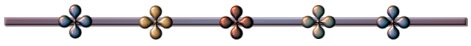
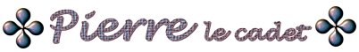

|

French version
HOME
ORIGINS
ENGAGÉ
MARRIAGE
TRAVEL
FAMILY
DEATH
SÉBASTIENNE
DESCENDANTS
SOURCES

SIGN
MY GUEST
BOOK
| |
|

|
|
Mathieu
Choret and Sébastienne Veillon had seven children, six boys (two of
which were twins), and a girl. A rare occurrence for the time period,
all of their children reached adulthood.
Mathieu
and Sébastienne then had nearly seventy-five grandchildren. It is
what one can call having numerous descendants. Here
are the children of Mathieu and Sébastienne: |
|

|
| Robert,
born on June 7, 1648
in Quebec was baptized by his father. At his baptism his godparents
(Robert Hache, the friend and colleague of his father among Jesuits, and
Barbara Reboux) were named.
Robert
got married on April 22, 1674 in Quebec City with Madeleine Paradis (born on January 12, 1655 in Quebec). They had six
children when Madeleine died on September 2, 1684 in Quebec. These
children married into the Le Normand, Rainville, Marcoux, Duquet and
Lemire families.
In
the census of 1681 Robert and his family are registered as inhabitants
of St-Laurent, island of Orleans. His
trade is a carpenter and he resides on land close to that of his
father-in-law, Pierre Paradis. He
has a rifle, seven horned animals and fifteen acres of ground in value.
Several
authenticated contracts are found where Robert Choret engages as
carpenter, with the construction of the cathedral of Quebec for example,
or lends money or buys grounds. For
example in 1700 he buys the land of his niece Françoise (daughter of
Joseph Choret) in St-Pierre, island of Orleans.
One finds also his name in judgements of the Sovereign Council.
Robert
remarried on February 7, 1686 in Quebec with Marguerite Le Rouge. They
had eleven children who will link themselves with the Martin, Massé,
Lemay, Auger, Grenier, Lemire, Biron, and Petit families. Several will have lived in the area of Lotbinière.
Indeed,
Robert migrated towards this area, particularly to Ste-Croix, at the
beginning of the 18th century. His
last three children were born there between 1700 and 1705.
On
April 5, 1701 Robert bought for Mathieu Amiot’s widow the manor Pointe-aux-Bouleaux close to Ste-Croix of Lotbinière.
He had to leave a quarter of it to Charles Amiot by judgement of
the Prévoté of Québec on May 14, 1708 and sell the remainder
to Pierre-Noël Le Gardeur on August 21, 1714.
Robert
died on June 15, 1716 at Ste-Croix at the age of 68 years old. |
|
Photo Michel Chartrand |
To
note that Mr. Jean Charest, current Prime Minister of Quebec, is a
descendant of Robert Choret and his second wife. Link
to his family tree
|
|
 |
|
|
| Joseph,
born
on August 14, 1650 in Beauport, was baptized by Robert Giffard.
Baptized on September 8, 1650 in Beauport, his godparents were
Robert Giffard, Lord of Beauport, and Marie-Francoise de Clément de
Vrault.
Joseph
was confirmed on May 5, 1662 by Mgr of Laval.
He
got married on October 29, 1676 at Ste-Family, island of Orleans, with Anne
Loignon (born in 1653).
In
the census of 1681 Joseph is registered with his family as inhabitants
of St-Laurent, island of Orleans. He
has a rifle, four horned animals and fifteen acres of ground in value.
Joseph
has three children, they will live in St-Pierre, island of Orleans, and
two of them will marry into the Costé and Trudel families.
The third will become a nun at the General Hospital of Quebec.
Joseph
died on October 28, 1684 at the principal hospital of Quebec, in the
room of the poor and is buried in the cemetery of the poor of the
hospital. He is 35 years
old.
The
Joseph’s widow, Anne Loignon, got married again with Antoine Paulet on
February 13, 1685. She died
on November 25, 1722 in St-Pierre.
In
1700, part of the land which had belonged to Joseph, in St-Laurent
island of Orleans, was used for construction of the church of this
parish.
|
|

|
| Jeanne,
born on December 11, 1652, was immediately baptized at her parents’
and was re-baptized on January 12, 1653 in Quebec by Father Ragueneau,
superior of the Jesuits, who recorded the act in Quebec.
Her godparents are Robert Drouin and Jeanne Brant.
Jeanne
got married on January 14, 1669 to Jean
Moricet (born on August 18, 1641 at Saint-Gilles-of-Surgères, a
borough located approximately 30 kilometres in the east of La Rochelle).
The marriage took place in the chapel of Beauport and was
officiated by Thomas Morel, priest missionnaire Jesuit of the Seminar of
Quebec. The witnesses were
Paul Vachon, the notary of the Choret family, and two inhabitants of
Beauport.
In
the census of 1681, the couple had thirty acres of ground in value.
They
had fourteen children, all born in Ste-Famille, island of Orleans.
Jean
Moricet died on August 15, 1699 in Ste-Famille. Jeanne did not remarry, she seems to have been financially
secure and her children were able to support her.
Jeanne
died on September 26, 1718, at age of 66 years old.
The
children of Jeanne would ally themselves with the Asselin, Létourneau,
Clément, Catrin, and Simon families. Three of them will marry
Cloutiers, and one of the girls will marry Charles Loignon, the brother
of her aunt Jeanne, wife of Joseph Choret.
|
|

|
| Pierre l'aîné, (the
elder Pierre and one of the twins), was born on January 17, 1655 in
Quebec. He was baptized in
March 1655, no godparents are mentioned in his birth certificate.
Pierre
got married on January 21, 1686 in the chapel of Beauport to Madeleine
Giroux, after having signed a contract drawn up by the notary Paul
Vachon. It was a double
marriage since his brother, Pierre (the younger Pierre), got married
also the same day, at the same place.
Pierre
had more than ten children but several die at an early age. A child born
in 1696 had as a godfather Pierre Vachon, the son of the notary of the
family. In 1699, the last born had as godparents the Sieur Ignace
Juchereau du Chesnay and his sister Louise, wife of the captain of the
troops of the country, Alexandre de l’Estringan. This child would
marry in Charlesbourg and would die in Montreal in 1764.
N.B.Ignace Juchereau du Chesnay is the grandson and heir of
Robert Giffard, Lord of Beauport. Through
his wife he also inherits the manor of Fossambault.
The
children of Pierre will ally themselves with the Imbeault, Cliche, Jobin,
Rotureau and Sarrasin families.
Pierre
died on July 27, 1701 in the principal hospital of Quebec, at the age of
46 years old.
His
widow remarried on January 10, 1705 in Charlesbourg to Maurice Rhéaume.
|
|

|
| Ignace,
born on January 17,
1655, was baptized on August 29, 1655 in Quebec, therefore several
months after his twin brother. Why?
Perhaps one separates the twins following their birth, their
mother not being able to nourish them both.
Ignace could have been nourished by a wet nurse and baptized upon
his return to the family. It seems to me to be a plausible assumption.
Ignace
got married in Beauport on November 26, 1685 to Marie Bélanger.
He was a shoe-maker and farmer in Beauport.
Ignace
had five children, all born in Beauport.
They would marry into the Ferré, Petit, Laurent, Beaugis and
Picher families. The last
born in 1698 would marry a Beaugis related to his aunt, the wife of
Pierre (the younger Pierre).
Ignace
died at the age of 46 years old, on October 6, 1701, at the principal
hospital of Quebec, therefore a few months after his twin brother Pierre
(the elder Pierre). The two
twins of Mathieu and Sébastienne died the same year, with less than
three months of an interval between them.
His widow remarried on November 9, 1705 in Beauport
to Jacques Parent.
|
|

|
| Jean,
born
on November 27, 1657, was baptized in Quebec on December 9, 1657.
His godparents were Jean Le Vasseur and Marie Lelart.
Jean
got married on October 30, 1684 to Claire Baucher in Ste-Famille,
island of Orleans. In the
marriage certificate passed in front of the notary Paul Vachon, Jean is
said to be living in St-Pierre, island of Orleans.
His
eight children would ally themselves with the Ouellet, Boissonneau,
Lepage, Liénard, Lis, Roussin and Ricosse families.
Some would live in Neuville, others at St-Vallier in Bellechasse.
Jean
died on June 6, 1699, always in St-Pierre, island of Orleans, he was 42
years old.
|
|
 |
| Pierre le Cadet,
(the younger Pierre),
born on January 21,
1662, was baptized in the chapel of Beauport.
He
got married there, at the same time as his brother Pierre (the elder
Pierre), January 21, 1686 to Marie-Anne Beaugis, born on January 27,
1669 in Quebec. They signed
a marriage contract in front of the notary Paul Vachon.
Their witnesses to the marriage were the notary and Robert Choret,
elder brother of Pierre. To
note that Robert went himself to get remarried again, a few days later,
that is to say on February 7th.
Pierre (the younger Pierre) had eighteen children.
They were all born in Beauport, but several will migrate towards
the area of Montréal where they will marry. They will ally themselves
with the Turcot, Brault, Chrétien, Roy, Huppé, Magnan, Maurier,
Martin, Gauthier, Rapidiou, Larouche, Bouthillet, Trottier, Maheu and
Taillon familiesPierre
(the younger Pierre) died on May 5, 1736 in Beauport, at the age of 74
years old. With him died
the last member of the first generation of Choret born in New France.
Nearly ninety years had passed since his parents had settled there in
1647.
|
|
|